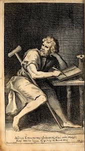

Sobre Epicteto
<center>blog filosofia</center>
A filosofia
Epicteto foi um filósofo grego, pertencente à Escola Estóica, que viveu a maior parte de sua vida como escravo em Roma .
Epicteto nasceu em 55 d. C. em Heliópolis, na Frígia (atualmente, Pamukkale, Turquia). Ainda durante a infância chegou a Roma como escravo do liberto Epafrodito,
que havia servido como escravo do imperador Nero.
Para Epicteto, o ato de pôr em prática a filosofia supõe o afastamento das coisas
exteriores e o aperfeiçoamento da capacidade de escolha, de modo a “torná-la
harmoniosa à natureza, elevada, livre, desimpedida, desembaraçada, leal, digna com a
natureza”
Sua vida é relativamente pouco conhecida e ele não deixou nenhum trabalho escrito de sua autoria. Seu discípulo Lúcio Flávio Arriano de Nicomédia, assegurou a transmissão de sua obra publicando as notas tomadas durante as aulas de seu mestre, em oito livros, metade dos quais já perdidos.
De sua obra se conservam o Encheiridion de Epicteto (também conhecido como Manual de Epicteto) e as Diatribes (ou Discursos).
